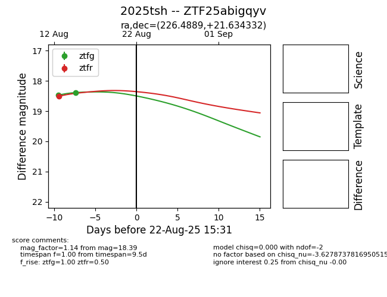

Target 2025tsh at 2025-08-21 11:20, see:
FINK: fink-portal.org/ZTF25abigqyv
Lasair: lasair-ztf.lsst.ac.uk/objects/ZTF25abigqyv
ALeRCE: alerce.online/object/ZTF25abigqyv
TNS: wis-tns.org/object/2025tsh
YSE: ziggy.ucolick.org/yse/transient_detail/2025tsh
alt names
ZTF25abigqyv (ztf,alerce)
2025tsh (tns,yse)
coordinates:
equatorial (ra, dec) = (226.4889,+21.63433)
galactic (l, b) = (30.1738,+58.97564)
photometry
last atlaso=18.72, ztfg=18.39, ztfr=18.51
2 atlaso, 2 ztfg, 1 ztfr detections
